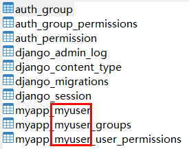

5 自定义Django认证系统的技术方案¶

Django已经提供了开箱即用的认证系统，但是可能并不满足我们的个性化需求。自定义认证系统需要知道哪些地方可以扩展，哪些地方可以替换。本文就来介绍自定义Django认证系统的相关技术细节。
自定义认证后端¶
AUTHENTICATION_BACKENDS¶
Django默认认证后端为：
['django.contrib.auth.backends.ModelBackend']
可以在settings.py中配置AUTHENTICATION_BACKENDS为自定义的认证后端，其本质是Python
class，在调用django.contrib.auth.authenticate()时会进行遍历：
def authenticate(request=None, **credentials):
"""
If the given credentials are valid, return a User object.
"""
for backend, backend_path in _get_backends(return_tuples=True):
backend_signature = inspect.signature(backend.authenticate)
try:
backend_signature.bind(request, **credentials)
except TypeError:
# This backend doesn't accept these credentials as arguments. Try the next one.
continue
try:
user = backend.authenticate(request, **credentials)
except PermissionDenied:
# This backend says to stop in our tracks - this user should not be allowed in at all.
break
if user is None:
continue
# Annotate the user object with the path of the backend.
user.backend = backend_path
return user
# The credentials supplied are invalid to all backends, fire signal
user_login_failed.send(sender=__name__, credentials=_clean_credentials(credentials), request=request)
列表中的认证后端是有先后顺序的，Django会依次进行认证，只要有后端认证成功，就会结束认证，如果有后端抛出PermissionDenied异常，也会停止认证。
如果修改了认证后端，想要用户重新认证，那么需要调用
Session.objects.all().delete()清除session数据，因为session中会缓存已认证过的认证后端。
编写认证后端¶
先看看默认认证后端的源码片段：
class ModelBackend(BaseBackend):
"""
Authenticates against settings.AUTH_USER_MODEL.
"""
def authenticate(self, request, username=None, password=None, **kwargs):
if username is None:
username = kwargs.get(UserModel.USERNAME_FIELD)
if username is None or password is None:
return
try:
user = UserModel._default_manager.get_by_natural_key(username)
except UserModel.DoesNotExist:
# Run the default password hasher once to reduce the timing
# difference between an existing and a nonexistent user (#20760).
UserModel().set_password(password)
else:
if user.check_password(password) and self.user_can_authenticate(user):
return user
...
def get_user(self, user_id):
try:
user = UserModel._default_manager.get(pk=user_id)
except UserModel.DoesNotExist:
return None
return user if self.user_can_authenticate(user) else None
总结一下：
继承BaseBackend。
实现了
authenticate()。（backend也有个authenticate方法，跟django.contrib.auth.authenticate()不一样哦）authenticate(request=None, **credentials)方法的第一个入参是request，可为空，第二个入参是credentials（用户凭证如用户名、密码），示例：from django.contrib.auth.backends import BaseBackend class MyBackend(BaseBackend): def authenticate(self, request, username=None, password=None): # Check the username/password and return a user. ...
用户凭证也可以是token：
from django.contrib.auth.backends import BaseBackend class MyBackend(BaseBackend): def authenticate(self, request, token=None): # Check the token and return a user. ...
如果认证成功就返回User对象，如果认证失败就返回None。
实现了
get_user()。get_user(user_id)方法入参是user_id，可以是username/数据库ID等，必须是User的主键，返回值为User对象或者None。
我们试着来编写一个认证后端，为了演示效果，我们不用客户端服务器模式，而是在settings.py文件中增加2个配置，然后用我们自定义的认证后端进行认证，代码如下：
from django.conf import settings
from django.contrib.auth.backends import BaseBackend
from django.contrib.auth.hashers import check_password
from django.contrib.auth.models import User
class SettingsBackend(BaseBackend):
"""
认证settings中ADMIN_LOGIN和ADMIN_PASSWORD变量，比如：
ADMIN_LOGIN = 'admin'
ADMIN_PASSWORD = 'pbkdf2_sha256$30000$Vo0VlMnkR4Bk$qEvtdyZRWTcOsCnI/oQ7fVOu1XAURIZYoOZ3iq8Dr4M='
"""
def authenticate(self, request, username=None, password=None):
login_valid = (settings.ADMIN_LOGIN == username)
pwd_valid = check_password(password, settings.ADMIN_PASSWORD)
if login_valid and pwd_valid:
try:
user = User.objects.get(username=username)
except User.DoesNotExist:
# 创建一个新用户
user = User(username=username)
user.is_staff = True
user.is_superuser = True
user.save()
return user
return None
def get_user(self, user_id):
try:
return User.objects.get(pk=user_id)
except User.DoesNotExist:
return None
自定义认证后端授权¶
认证后端可以重写方法get_user_permissions(),
get_group_permissions(), get_all_permissions(), has_perm(),
has_module_perms(), with_perm()来实现授权。示例：
from django.contrib.auth.backends import BaseBackend
class MagicAdminBackend(BaseBackend):
def has_perm(self, user_obj, perm, obj=None):
# 如果是超管，就会获得所有权限，因为不管perm是什么，都返回True
return user_obj.username == settings.ADMIN_LOGIN
可以根据业务编写具体的判断逻辑，给不同用户/组授予不同权限。
user_obj可以是django.contrib.auth.models.AnonymousUser，用来给匿名用户授予某些权限。
User有个is_active字段，ModelBackend和RemoteUserBackend不能给is_active=False的用户授权，如果想授权，可以使用AllowAllUsersModelBackend或AllowAllUsersRemoteUserBackend。
自定义新权限¶
除了增删改查权限，有时我们需要更多的权限，例如，为myapp中的BlogPost创建一个can_publish权限：
方法1 meta中配置
class BlogPost(models.Model):
...
class Meta:
permissions = (
("can_publish", "Can Publish Posts"),
)
方法2 使用``create()``函数
from myapp.models import BlogPost
from django.contrib.auth.models import Permission
from django.contrib.contenttypes.models import ContentType
content_type = ContentType.objects.get_for_model(BlogPost)
permission = Permission.objects.create(
codename='can_publish',
name='Can Publish Posts',
content_type=content_type,
)
在使用python manage.py migrate命令后，就会创建这个新权限，接着就可以在view中编写代码判断用户是否有这个权限来决定能否发表文章。
扩展User模型¶
代理模型¶
如果不需要修改表结构，只扩展行为，那么可以使用代理模型。示例：
from django.contrib.auth.models import User
class MyUser(User):
class Meta:
proxy = True
def do_something(self):
# ...
pass
OneToOneField¶
如果需要扩展字段，那么可以使用OneToOneField。示例：
from django.contrib.auth.models import User
class Employee(models.Model):
user = models.OneToOneField(User, on_delete=models.CASCADE)
department = models.CharField(max_length=100)
这样会新增一张表：
CREATE TABLE `user_employee` (
`id` int(11) NOT NULL AUTO_INCREMENT,
`department` varchar(100) COLLATE utf8mb4_unicode_ci NOT NULL,
`user_id` int(11) NOT NULL,
PRIMARY KEY (`id`),
UNIQUE KEY `user_id` (`user_id`),
CONSTRAINT `user_employee_user_id_9b2edd10_fk_auth_user_id` FOREIGN KEY (`user_id`) REFERENCES `auth_user` (`id`)
) ENGINE=InnoDB DEFAULT CHARSET=utf8mb4 COLLATE=utf8mb4_unicode_ci;
在代码中使用User也能访问到Employee的属性：
>>> u = User.objects.get(username='fsmith')
>>> freds_department = u.employee.department
虽然这种方式能实现扩展，但是OneToOneField会增加数据库查询的复杂度，加重数据库处理负担，并不建议采用。
替换User模型¶
新版Django的推荐做法是，如果不想用默认User模型，那么就把它替换掉。Django除了User模型，还有2个抽象模型AbstractUser和AbstractBaseUser，从源码中可以看到它们的继承关系：
class User(AbstractUser):
class AbstractUser(AbstractBaseUser, PermissionsMixin):
class AbstractBaseUser(models.Model):
为什么不用User模型，还要做2个抽象模型呢？这是因为一般继承有2个用途，一是继承父类的属性和方法，并做出自己的改变或扩展，实现代码重用。但是这种方式会导致子类也包含了父类的实现代码，代码强耦合，所以实践中不会这么做。而是采用第二种方式，把共性的内容抽象出来，只定义属性和方法，不提供具体实现（如java中的接口类），并且只能被继承，不能被实例化。AbstractUser和AbstractBaseUser就是对User的不同程度的抽象，AbstractUser是User的完整实现，可用于扩展User，AbstractBaseUser是高度抽象，可用于完全自定义User。
继承AbstractUser¶
除了代理模型和OneToOneField，扩展User的新方式是定义新的MyUser并继承AbstractUser，把User替换掉，再添加额外信息。具体操作步骤我们通过示例来了解：
替换User最好是创建项目后，首次
python manage.py migrate前，就进行替换，否则数据库的表已经生成，再中途替换，会有各种各样的依赖问题，只能手动解决。
第一步，myapp.models中新建MyUser，继承AbstractUser：
from django.contrib.auth.models import AbstractUser
class MyUser(AbstractUser):
pass
第二步，settings.py中配置AUTH_USER_MODEL，指定新的用户模型：
AUTH_USER_MODEL = 'myapp.MyUser'
第三步，settings.py中配置INSTALLED_APPS：
INSTALLED_APPS = [
'django.contrib.admin',
'django.contrib.auth',
'django.contrib.contenttypes',
'django.contrib.sessions',
'django.contrib.messages',
'django.contrib.staticfiles',
'myapp.apps.MyappConfig' # 新增
]
第四步（可选），如果需要使用Django自带管理后台，那么要在admin.py中注册：
from django.contrib import admin
from django.contrib.auth.admin import UserAdmin
from .models import MyUser
admin.site.register(MyUser, UserAdmin)
我们看下数据库中的效果，提交数据迁移：
python manage.py makemigrations
执行数据迁移：
python manage.py migrate
从表能看出来，默认User已经替换为MyUser了：

替换之后，就可以进行扩展了。比如自定义表名：
from django.contrib.auth.models import AbstractUser
class MyUser(AbstractUser):
class Meta:
db_table = "user"
pass
替换User后，就不能直接引用
django.contrib.auth.models.User了，可以使用get_user_model()函数或者settings.AUTH_USER_MODEL。
继承AbstractBaseUser¶
继承AbstractUser只能做扩展，如果我们想完全自定义用户模型，那么就需要继承AbstractBaseUser，再重写属性和方法。
USERNAME_FIELD
USERNAME_FIELD是用户模型的唯一标识符，不一定是username，也可以是email、phone等。
唯一标识符是Django认证后端的要求，如果你实现了自定义认证后端，那么也可以用非唯一标识符作为USERNAME_FIELD。
我们可以参考AbstractUser的实现：
username = models.CharField(
_('username'),
max_length=150,
unique=True,
help_text=_('Required. 150 characters or fewer. Letters, digits and @/./+/-/_ only.'),
validators=[username_validator],
error_messages={
'unique': _("A user with that username already exists."),
},
)
USERNAME_FIELD = 'username'
修改为自定义：
class MyUser(AbstractBaseUser):
identifier = models.CharField(max_length=40, unique=True)
...
USERNAME_FIELD = 'identifier'
EMAIL_FIELD
参考AbstractUser的实现：
email = models.EmailField(_('email address'), blank=True)
EMAIL_FIELD = 'email'
REQUIRED_FIELDS
REQUIRED_FIELDS是指必填字段。参考AbstractUser的实现：
REQUIRED_FIELDS = ['email']
这表示email是必填的，在使用createsuperuser命令时，会提示必须输入。
修改为自定义：
class MyUser(AbstractBaseUser):
...
date_of_birth = models.DateField()
height = models.FloatField()
...
REQUIRED_FIELDS = ['date_of_birth', 'height']
不需要再填USERNAME_FIELD和password，因为Django已经默认包含了，只需要填其他字段即可。
is_active
可以用来做软删（不删除数据而是把is_active置为False）。参考AbstractUser的实现：
is_active = models.BooleanField(
_('active'),
default=True,
help_text=_(
'Designates whether this user should be treated as active. '
'Unselect this instead of deleting accounts.'
),
)
get_full_name()
参考AbstractUser的实现：
def get_full_name(self):
"""
Return the first_name plus the last_name, with a space in between.
"""
full_name = '%s %s' % (self.first_name, self.last_name)
return full_name.strip()
get_short_name()
参考AbstractUser的实现：
def get_short_name(self):
"""Return the short name for the user."""
return self.first_name
更多属性和方法请看源码。
查看源码的方法：在
from django.contrib.auth.models import AbstractBaseUser代码上，按住CTRL点击AbstractBaseUser即可。
重写manager¶
如果自定义用户模型改变了username, email, is_staff, is_active, is_superuser, last_login, and date_joined字段，那么可能需要继承BaseUserManager，并重写以下2个方法：
create_user(username_field, password=None, **other_fields)
create_user(username_field, password=None, **other_fields)
示例：
from django.contrib.auth.models import BaseUserManager
class CustomUserManager(BaseUserManager):
def create_user(self, email, date_of_birth, password=None):
# create user here
...
def create_superuser(self, email, date_of_birth, password=None):
# create superuser here
...
重写权限¶
从AbstractUser的定义可以看到是继承了PermissionsMixin类的：
class AbstractUser(AbstractBaseUser, PermissionsMixin):
所以重写权限就是重写PermissionsMixin的属性和方法，如get_user_permissions()、has_perm()等。
一个完整示例¶
我们把email作为USERNAME_FIELD，并且让date_of_birth必填。
models.py
from django.db import models
from django.contrib.auth.models import (
BaseUserManager, AbstractBaseUser
)
class MyUserManager(BaseUserManager):
def create_user(self, email, date_of_birth, password=None):
"""
Creates and saves a User with the given email, date of
birth and password.
"""
if not email:
raise ValueError('Users must have an email address')
user = self.model(
email=self.normalize_email(email),
date_of_birth=date_of_birth,
)
user.set_password(password)
user.save(using=self._db)
return user
def create_superuser(self, email, date_of_birth, password=None):
"""
Creates and saves a superuser with the given email, date of
birth and password.
"""
user = self.create_user(
email,
password=password,
date_of_birth=date_of_birth,
)
user.is_admin = True
user.save(using=self._db)
return user
class MyUser(AbstractBaseUser):
email = models.EmailField(
verbose_name='email address',
max_length=255,
unique=True,
)
date_of_birth = models.DateField()
is_active = models.BooleanField(default=True)
is_admin = models.BooleanField(default=False)
objects = MyUserManager()
USERNAME_FIELD = 'email'
REQUIRED_FIELDS = ['date_of_birth']
def __str__(self):
return self.email
def has_perm(self, perm, obj=None):
"Does the user have a specific permission?"
# Simplest possible answer: Yes, always
return True
def has_module_perms(self, app_label):
"Does the user have permissions to view the app `app_label`?"
# Simplest possible answer: Yes, always
return True
@property
def is_staff(self):
"Is the user a member of staff?"
# Simplest possible answer: All admins are staff
return self.is_admin
不要忘了在settings.py中修改AUTH_USER_MODEL哦：
AUTH_USER_MODEL = 'customauth.MyUser'
小结¶
写了这2篇关于Django认证系统的文章，明白了以前似懂非懂的技术细节。如果平时有需求想自己做个小网站，完全可以用Django来快速实现后端，开箱即用还是有点香。Template和Form不属于前后端分离的技术，在学习时可以选择性跳过。公众号后台回复“加群”,“Python互助讨论群”欢迎你。